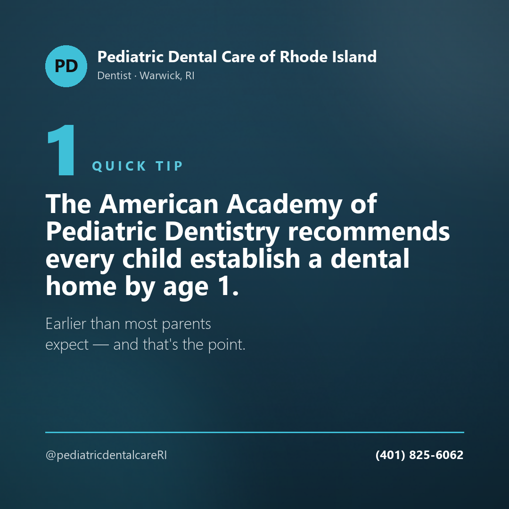

photo · Instagram
The American Academy of Pediatric Dentistry recommends every child establish a dental home by age 1. Earlier than most parents expect — and that's the point.
Comprehensive dental care for children from birth to 18, in a caring and compassionate manner — for families throughout Southern New England.
Most parents are surprised by how early it starts. The recommendation we follow comes from the American Academy of Pediatric Dentistry, and it shapes how this practice is run.
Every child establish a dental home by age 1. A dental home should provide age specific comprehensive oral health care and include all aspects of oral care delivery in an easily accessible, coordinated, and family oriented manner.The American Academy of Pediatric Dentistry, as cited by the practice
In their own words: “At Pediatric Dental Care of RI we are dedicated to providing the highest quality comprehensive dental care to children aged birth to 18 years old in a caring and compassionate manner.”
Children who have a dental home are more likely to receive appropriate preventative and routine oral health care.
Every child should have an age specific prevention plan. We work with children and their parents to build an individualized plan to establish and maintain oral health.
Dental caries remains the most prevalent chronic disease in children, and affects all age groups of the population.
Used appropriately, fluoride is both safe and effective in preventing and controlling dental caries.
Sealants fill in the pits and fissures that are part of a child’s natural tooth anatomy, and play an important role in preventing tooth decay.
Dr. Hencler and his staff create an environment built to help your child feel at ease while they’re with us.
Dr. Jason Hencler was born and raised in Rhode Island. He earned his DMD degree from Tufts University School of Dental Medicine, then completed a two year residency at St. Joseph Hospital in Providence, RI, where he earned an Advanced Education in Pediatric Dentistry certificate.
Patient forms — appointment policy, health history, HIPAA, and a sleep screening for ages 3 and up — are available in English and Spanish.
New patients from birth to 18 are welcome. Call the office and we’ll find a time that works around school and work.
(401) 825-6062Content